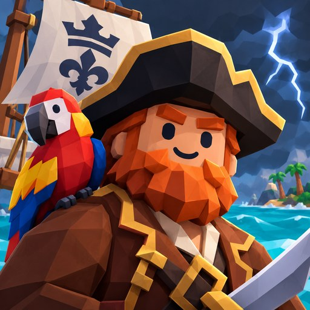

Капитан Шторм
Ночь, шторм — и ваш корабль идёт ко дну. Легендарный пират Чёрный Шквал не оставляет свидетелей, но вы выжили. Губернатор Родной гавани даёт вам старый шлюп: станьте капитаном и раньше Шквала соберите пять частей карты «Сердца Шторма».


Об игре
Пиратское приключение на Android: свой корабль, архипелаг островов и сюжет о погоне за картой «Сердца Шторма».
Сюжет из пяти глав
Лагерь Мурены на Острове Акулы, атаман Грог Висельник, казначей-предатель и Туманная Вдова у погасшего маяка. Каждая глава — новая часть карты.
Морские бои
Залпы бортом и погони на море, сабля и пистолет в лагерях пиратов на берегу. Потопленные корабли оставляют на воде сундуки с добычей.
Архипелаг
17 островов: порты, дикие острова с лагерями пиратов, вулкан и туман неизведанного на карте — острова открываются, когда до них доплывёте.
Клады
Карты сокровищ, слухи у торговцев, обломки в море. Копайте лопатой, вылавливайте добычу крюком и продавайте её торговым обществам.
Верфь и капитан
Шесть кораблей, пушки, улучшения, окраска, паруса и гербы. У портного — шляпы, камзолы и повязки для капитана.
Живое море
Ветер и волны, смена дня и ночи, штормы, рыбалка, чайки, дельфины и акулы. Играть можно без интернета.
Обновления
Что менялось в игре.
Анонс — скоро в RuStore
- Сюжет: главы 1–5, главы 6–7 выйдут в обновлении
- Управление для сенсорного экрана
- Награда за вход каждый день и Лавка с сундуками